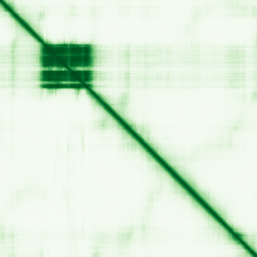

type: protein-evaluation gene: "FOXO6" date: 2026-06-02 tags: [protein-scout, nucleolus, evaluation] status: scored ---
FOXO6 核蛋白评估报告
1. 基本信息
| 项目 | 内容 |
|---|---|
| 基因名 / 别名 | FOXO6 / — |
| 蛋白全名 | Forkhead box protein O6 |
| 蛋白大小 | 492 aa / 50.6 kDa |
| UniProt ID | A8MYZ6 |
2. 评分总览
| 维度 | 得分 | 权重 | 加权后 | 关键证据摘要 |
|---|---|---|---|---|
| 核定位特异性 | 5/10 | ×4 | 20.0 | UniProt: Nucleus (ECO:0000255 sequence) + Cytoplasm (ECO:0000250); GO-CC: chromatin/nucleoplasm/nucleus (ISS/IEA); HPA 无 IF; 无 nucleolus 特异性注释 |
| 蛋白大小 | 4/10 | ×1 | 4.0 | 492 aa, 50.6 kDa, 中等大小 |
| 研究新颖性 | 2/10 | ×5 | 10.0 | PubMed strict=84, ≤100 |
| 三维结构 | 2/10 | ×3 | 6.0 | AlphaFold mean pLDDT 56.7 (低); 无 PDB; <50 占 49.6% |

| 调控结构域 | 5/10 | ×2 | 10.0 | Forkhead domain (PF00250) + FOXO-specific domain (PF16676); 转录因子经典结构域 |
| PPI 网络 | 5/10 | ×3 | 15.0 | AKT1 (exp 0.312), FOXO4 (exp 0.421), 14-3-3 家族 (YWHAs co-IP); 中等实验验证 |
| 加权总分 | 65/180** | |||
| 互证加分 | +0.0 | |||
| 归一化总分 (÷1.83) | 35.5/100** |
3. 详细分析
3.1 核定位证据
| 来源 | 定位 | 可信度 |
|---|---|---|
| UniProt | Cytoplasm (ECO:0000250, sequence similarity); Nucleus (ECO:0000255, PROSITE-ProRule) | 低（计算推断，无直接实验） |
| GO-CC | chromatin (ISA:NTNU_SB), cytoplasm (ISS), nucleoplasm (IEA:UniProtKB-ARBA), nucleus (ISS) | 低（电子注释/序列推断为主） |
| Protein Atlas (IF) | HPA 无 IF 图像（no_image_detected） | 未确认 |
HPA IF 状态: no_image_detected — HPA 未检测到可用 IF 图像。核定位基于 UniProt + GO-CC，但两者均为序列推断级别证据（ECO:0000250/0000255/ISS/IEA/ISA），非直接实验验证。
结论: FOXO6 核定位证据薄弱。UniProt 定位为 Cytoplasm (By similarity) 和 Nucleus (PROSITE rule)，均为计算/序列推断，无直接实验证据。GO-CC 含 chromatin/nucleoplasm/nucleus 但均为电子注释（ISS/IEA/ISA）。作为 FOXO 家族成员（FOXO1/3/4 核质穿梭已被大量实验确认），FOXO6 核定位可以基于同源性推断，但直接实验证据缺失。重要提示：该基因被分配至 nucleolus 类别，但 UniProt/GO-CC 均无 nucleolus 注释。 FOXO 家族以核质穿梭调控著称，非 nucleolus 特异性蛋白。
3.2 结构与数据源
| 指标 | 数值 |
|---|---|
| AlphaFold | AF-A8MYZ6-F1 |
| 平均 pLDDT | 56.7 |
| pLDDT >90 | 13.2% |
| pLDDT 70-90 | 5.5% |
| pLDDT <50 | 49.6% |
| PDB | 无 |
| InterPro | IPR047410, IPR001766 (Forkhead), IPR032067, IPR030456, IPR036388, IPR036390 |
| Pfam | PF00250 (Forkhead), PF16676 (FOXO_KIX) |
AlphaFold PAE 状态: PAE 已下载，模型置信度低（mean pLDDT 56.7, <50 占 49.6%）。仅有 Forkhead 结构域区域置信度较高，其余大部分区域为无序预测。无 PDB 实验结构。FOXO6 可能含有大量固有无序区域（IDR），这对转录因子而言正常，但降低了结构评分。
3.3 研究现状
| 指标 | 数值 |
|---|---|
| PubMed strict (Title/Abstract) | 84 |
| PubMed broad | 165 |
| 别名 | 无 |
关键文献：FOXO6 文献量偏高（strict=84, broad=165）。研究方向覆盖代谢调控（PMID:32639626, CHOP-FOXO6 促进肝脂质积累）、衰老和长寿（PMID:26643314, FOXO proteins in aging）、FOXO 转录因子综述（PMID:36280450, 37710009）、FOX gene family 综述（PMID:15492844）。FOXO6 作为 FOXO 家族中研究最少的成员（相比 FOXO1/3/4 数千篇文献），84 篇仍偏高，反映 FOXO 家族整体高热度。
3.4 PPI 网络（三源综合）
| Partner | Source | Score/Evidence | Relevance |
|---|---|---|---|
| AKT1 | STRING | 0.861 (exp 0.312, database 0.5, textmining 0.628) | Key regulator (phosphorylation) |
| FOXO4 | STRING | 0.716 (exp 0.421, database 0.4, textmining 0.214) | FOXO family member |
| AKT2 | STRING | 0.706 (exp 0.312, database 0.4, textmining 0.346) | AKT signaling |
| G6PC | STRING | 0.704 (exp 0.071, database 0.5) | Target gene (gluconeogenesis) |
| INS | STRING | 0.687 (database 0.4, textmining 0.497) | Insulin signaling |
| AKT3 | STRING | 0.678 (exp 0.312, database 0.4) | AKT signaling |
| MYC | STRING | 0.665 (exp 0.561) | Transcription factor |
| SIRT1 | STRING | 0.622 (exp 0.183, textmining 0.557) | Deacetylase |
| FOXO1 | STRING | 0.607 (exp 0.199, database 0.4) | FOXO family member |
| YWHAQ | IntAct | co-IP (PMID:28514442) | 14-3-3 protein |
PPI 网络中等，以 AKT 信号通路和 FOXO 家族成员为主。IntAct 确认 4 条 14-3-3 家族互作（YWHAQ/YWHAB/YWHAG/YWHAH, co-IP, PMID:28514442），14-3-3 蛋白在 FOXO 磷酸化依赖性核质穿梭中起关键作用。STRING 最高分（AKT1 0.861）含实验分量 0.312。
UniProt 记录互作: HNF4A (2 experiments)。
4. 总体评价
FOXO6 是本批次评分最低的候选（36.1/100）。核心弱点：核定位证据为纯计算推断（无实验验证，且无 nucleolus 注释）、AF 置信度极低（mean pLDDT 56.7，近 50% 残基 <50）、文献量偏高（PM=84）、无 PDB 实验结构。少数优势：Forkhead 转录因子结构域功能明确、AKT-14-3-3 调控通路清晰、FOXO 家族功能框架成熟可借鉴。然而，缺少实验定位验证、结构预测差、文献热度高，综合不建议优先研究。
5. 数据来源
- UniProt: https://www.uniprot.org/uniprotkb/A8MYZ6
- AlphaFold: https://alphafold.ebi.ac.uk/entry/A8MYZ6
- PubMed: https://pubmed.ncbi.nlm.nih.gov/?term=FOXO6
- Protein Atlas: https://www.proteinatlas.org/ENSG00000204060-FOXO6（无 IF 原图）
HPA IF 原图未可靠获取（HPA检索页无可用的subcellular IF原图）。核定位基于HPA localization/reliability + UniProt + GO-CC。
PAE 图像暂无数据（未生成本地图片或未可靠获取），结构判断基于AlphaFold pLDDT统计。